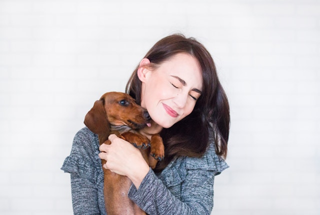

STOCKHOLM HundstalletAdress Hundstallet Åkeshovs Gårdsväg 10 168 38 BROMMA E-post info@hundstallet.se Telefon 08 – 20 38 48 Receptionen är bemannad måndag-fredag 9.00-16.00 (lunchstängt 12.00 – 13.00) Nya öppet tider i växeln från och med 1 mars! Växeln är öppen måndag – fredag 9.00 – 16.00 (lunchstängt 12.00 – 13.00). Telefontid för givarservice är måndag, onsdag samt torsdag 9.00-12.00. Omplacering har telefontid måndag-fredag 9.00-12.00. Helgdagar stängt. Obs! Vi släpper inte in besökare i stallarna förutom vid speciella tillfällen, t.ex Öppet Hus
